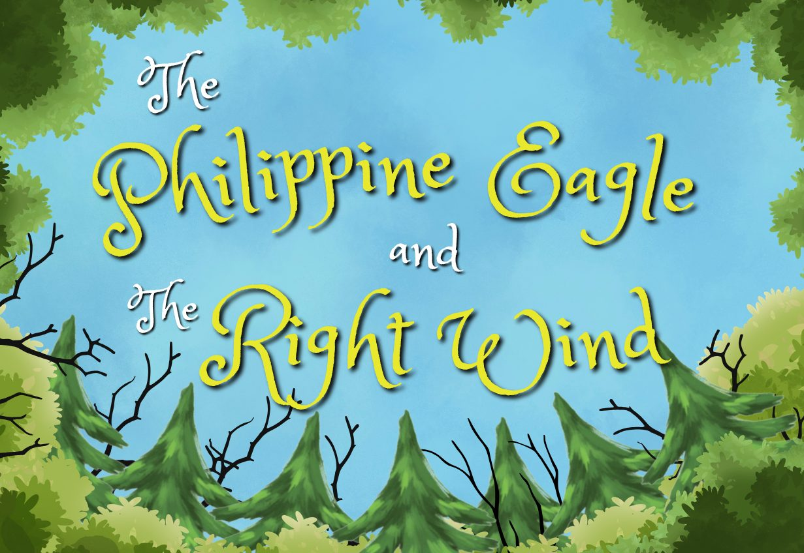
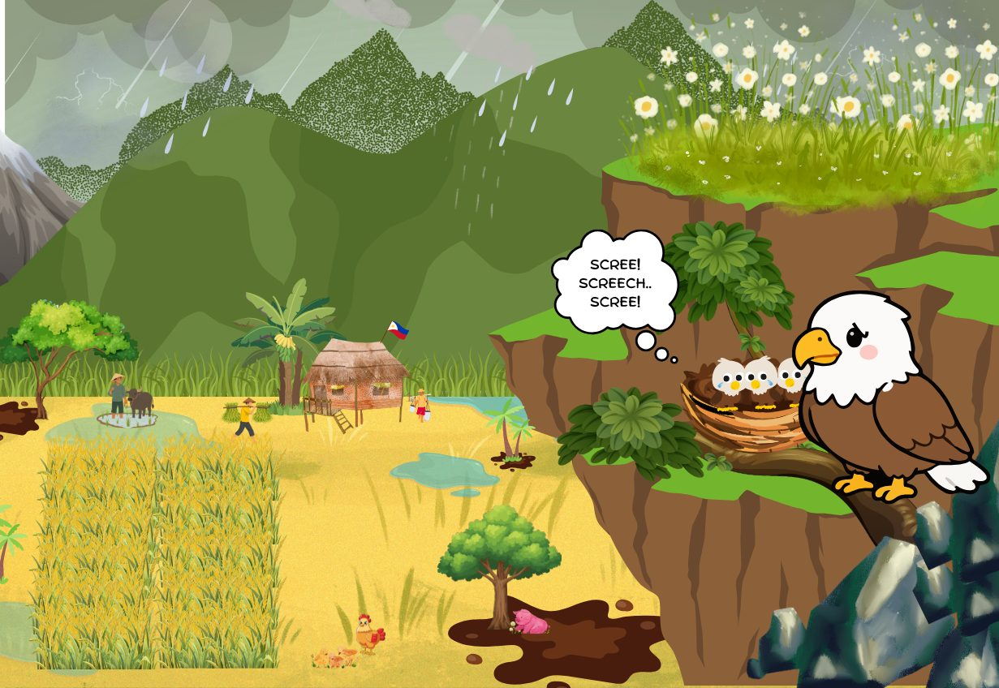
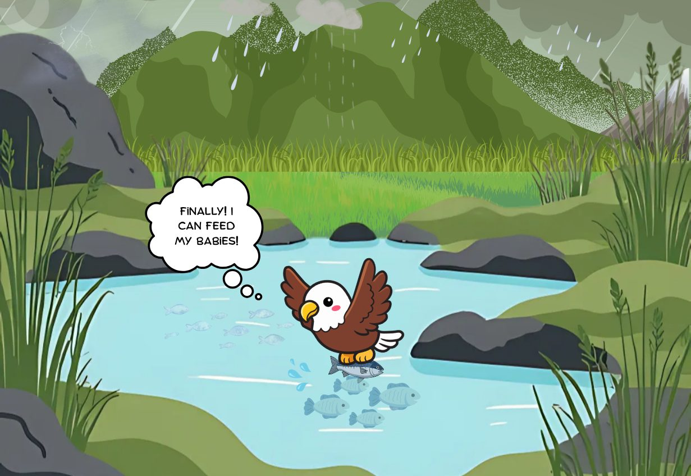
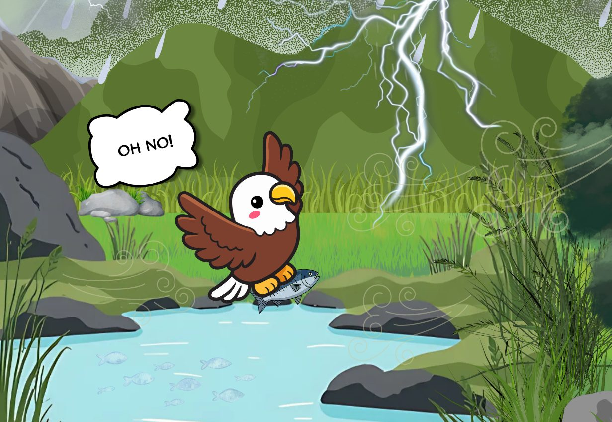
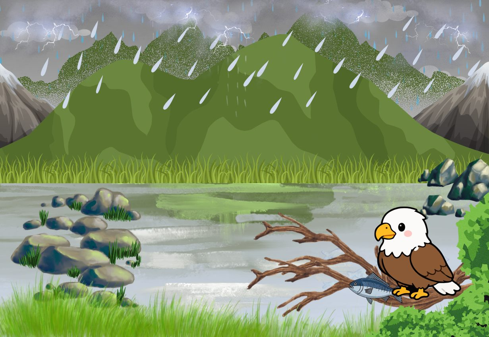
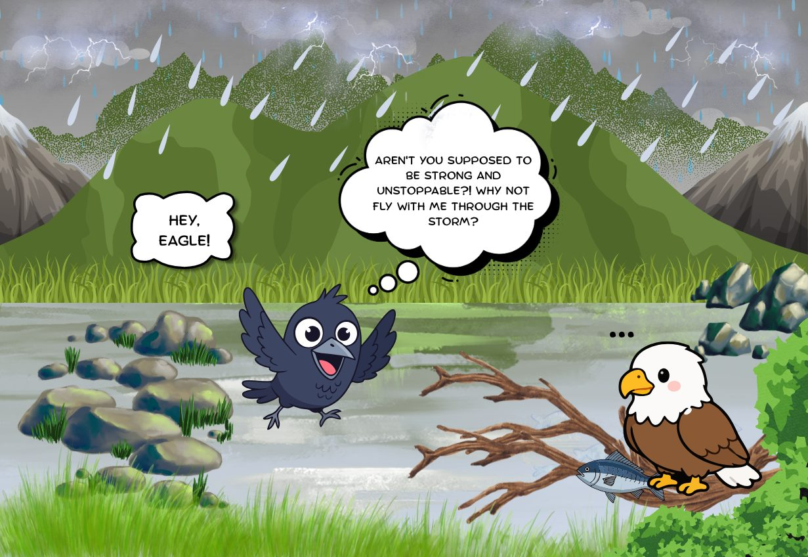
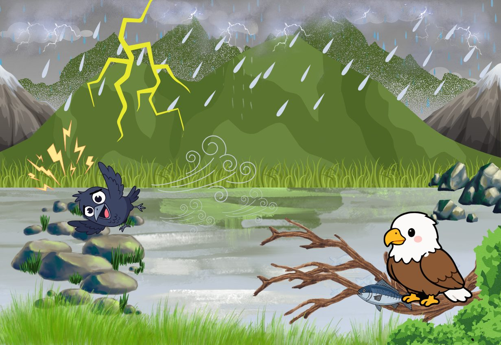
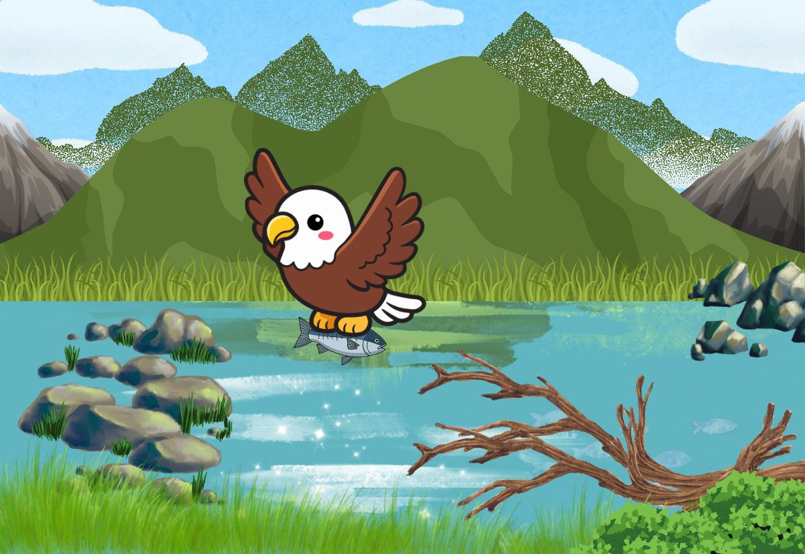
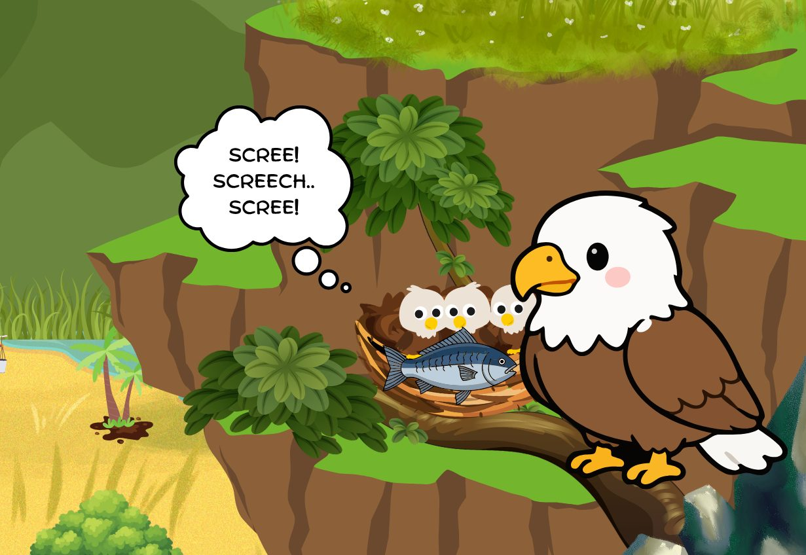
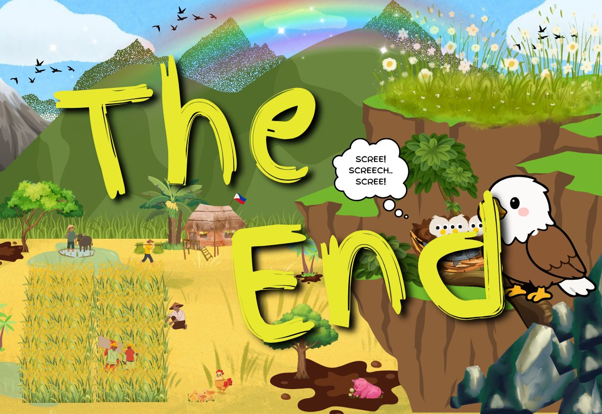

Story 03
The Philippine Eagle and the Right Wind

The narration for this story has not been recorded yet.
Narrated by Moyon and Mariano
Once upon a time, on a rainy day with a gentle breeze, a Philippine eagle named Mutya was worried about her eaglets, who were crying from hunger. “Scree! Screech… scree!” the eaglets cried.

Determined, she decided to fly down from her cliffside nest to search for something to eat. As she scanned the area from high above, she spotted a fish swimming in a small pond below. She dived down immediately and gripped the fish with her strong claws. “Finally! I can feed my babies!” she said happily, excited to return to her nest.

However, on her way back the wind suddenly became violently strong, and a heavy storm came towards her path, blocking her way. “Oh no…” she said worriedly.

Even though she was desperate to return to her starving eaglets, she chose to land on a tree branch, thinking that if she tried to fight the violent storm she might get injured and end up unable to return home at all. So she decided to wait until the storm passed.

While she was waiting, a crow named Siklab suddenly appeared. True to her nature, Siklab mocked her, saying, “Hey, Mutya! Aren’t you supposed to be strong and unstoppable? Why not fly with me through the storm?”

Mutya remained silent, as she always did. She did not want to waste her energy, because her only goal was to ensure a safe return home to feed her hungry eaglets. Proclaiming herself to be much braver, Siklab recklessly flew straight into the violent winds. Unable to handle the violent weather, Siklab quickly lost control and fell down towards the ground.

Meanwhile, Mutya held firmly onto the tree branch until the storm finally blew over. Once the skies cleared, she took flight with the fish in her beak.

She returned safely to her nest, and fed her eaglets.

They ate their food, and lived happily ever after.

Check what you remember
-
Who was worried about her hungry eaglets?
- Mutya the Philippine eagle
- Siklab the crow
- The fish in the pond
- The eaglets themselves
-
What did the eagle find in the pond?
- A frog
- A fish
- A snake
- A fallen branch
-
When did the eagle decide to wait on the tree branch?
- Before she left her nest to hunt
- When a heavy storm blocked her way home
- After she had already fed her eaglets
- When Siklab invited her to race
-
Where did the eagle land while waiting for the storm to pass?
- On a tree branch
- Back in her cliffside nest
- Beside the small pond
- On the ground below
-
Why did the eagle choose not to fly through the violent storm?
- Because she was afraid of Siklab
- Because she had already lost the fish
- Because she might get injured and never make it home to her eaglets
- Because crows are faster fliers than eagles